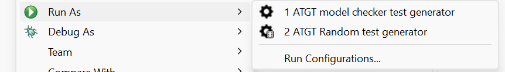

| Asmeta | ATGT | |
|
ATGT automatic test generator tool, generates test cases starting from asmeta specifications. How to run itATGT is integrated in the eclipse ASMETA envirnoment. Just right click to the spec and select Run:  !Supported techinquesThe current version of ATGT supports two techniques: * one based on the use of model checker NuSMV, which generates tests according to specific testing goals. It work only on a subset of specifications for which ATGT is able to build test golas and to translate the spec to NuSMV (currently only finite domains are supported) * one is random generation for which the simulator is used instead - teh user specifies only the number of tests and their length The tests can be generated in the avalla format (useful for validation). Paper (spin is no longer supported)Gargantini, A., Riccobene, E., Rinzivillo, S. (2003). Using Spin to Generate Tests from ASM Specifications. In: Börger, E., Gargantini, A., Riccobene, E. (eds) Abstract State Machines 2003. ASM 2003. Lecture Notes in Computer Science, vol 2589. Springer, Berlin, Heidelberg. [doi] [pdf] | ||